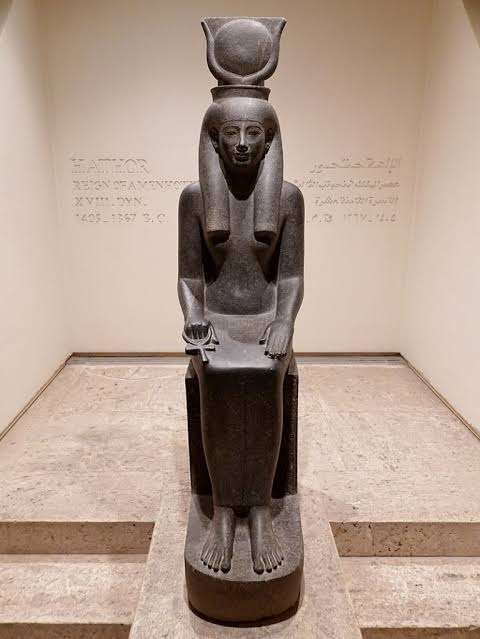

Explore
Egypt.
Choose a path through 5,000 years of people, places, objects and stories.
Five ways into the past.
You don't need to know where to begin. Follow a question, a person, an object—or simply let curiosity lead.
Travel Through Time
From the first Nile communities to the last pharaohs.
Meet the People
Pharaohs, queens, scribes, builders and everyday Egyptians.
Explore the Land
Follow the Nile to temples, cities, tombs and monuments.
Discover Artifacts
Meet the objects that carried ancient stories into the present.
Follow a Story
Experience history through the people who lived it.
The face that
became history.
Explore the famous funerary mask of Tutankhamun, then follow the connections to its ruler, dynasty, discovery site and world.
Enter the collection →
A doorway into a larger human story.What shaped Egyptian life?
Browse objects →Follow the Nile.
Find the stories.
Egypt's geography shaped its cities, monuments, trade and everyday life. Choose a place and begin exploring.
Open the Egypt Map →Five thousand years.
One continuous story.
Open full timeline →
Let history
choose for you.
One click. One discovery. A new doorway into ancient Egypt.